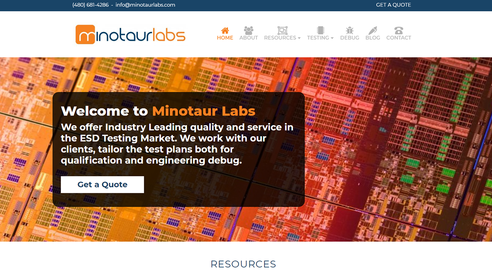
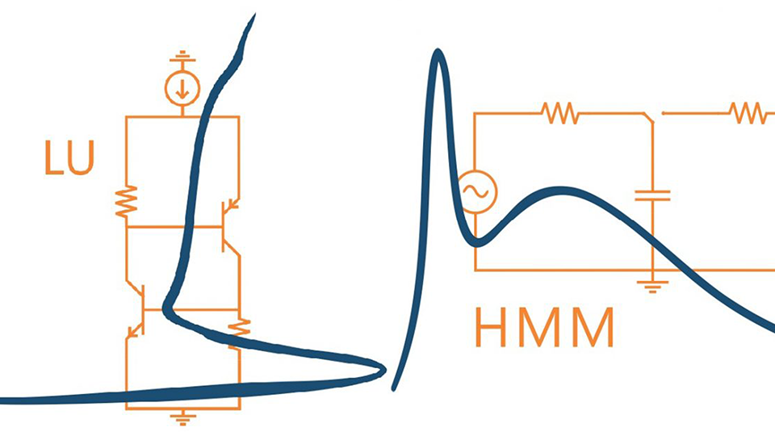

Designs for Minotaur Labs
Designing for Minotaur Labs is actually what got me on the path of Web Design. A few years back I worked at this local Electro-static Discharge (ESD) lab and helped around with odds and ends. One of my tasks was to build a functional website for the lab, and at that point I had no formal experience with anything web.
Outline & Process
The first thing I did for Minotaur Labs was create a fixed navigation bar. I used the current branding and font choices and supplemeneted them with icons that fit their respective navigation destinations. I then did some research on the testing done at Minotaur, and combined the visual representations of the testing circuit with the curve it produces. Each of these designs was used as a link to their respective testing pages.
Final Result

I no longer work for Minotaur Labs, and my original site design has been taken down, but the thematic choices I made and design elements I created still remain on the site. I'm quite proud of the work I did for Minotaur, especially because I did it with no prior web developement knowledge or understanding of design management processes.